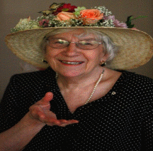
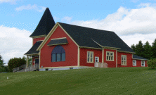
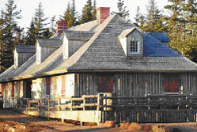
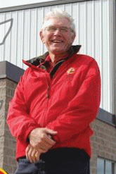

Vol. 9 No. 2
June, 2010
Catherine G. Hennessey Endowment Fund
T he Community Foundation of Prince Edward Island is (Pleased or proud?) to announce the recent establishment of the Catherine G. Hennessey Endowment Fund. Catherine’s dedication to (preservation of) Island heritage is(Well known? And what better way to acknowledge her work than with the establishment of an endowment fund which will ensure the preservation of heritage and urban planning to the City of Charlottetown (into the future). The Community Foundation will award grants from the fund in support Catherine’s charitable interests
Initial donations were made through a fundraising dinner held at the Delta on May 14th, 2010. The dinner was a great success with nearly (1000?) people in attendance; proceeds from tickets sales and a silent auction created the basis for the Catherine G. Hennessey Endowment Fund. In weeks since the dinner, donations and well wishes continue to come in. The Community Foundation looks forward to working with both the City of Charlottetown and Catherine as the fund continues to grow. If you would like to make a donation please contact the CFPEI office.
Summer Islander Lecture Series
T he Tryon Area Historical Society, in partnership with The Community Foundation of Prince Edward Island, is sponsoring four talks for the 2010 Summer Islander Lecture Series.
The Summer Islander Lecture Series is an initiative of interest visitors who choose to make PEI their summer home. The topics go beyond the usual “double taxation” and similar concerns and focus on changes occurring in our Island communities which may have an influence on attracting people here. By presenting these topics it gives a chance for summer visitors to also express how similar changes have affected their own communities, allowing us to make well-informed decisions which will continue to attract visitors to make PEI their second home.
The talks will be held at Bite's Cafe in Hampton starting at 4:00 pm on the following dates:
July 20, John Robinson - The Robinson Family Farm and Sustainable Agriculture
July 27, Jack Sorensen - History of Radio on PEI
August 3, Carol Livingstone - Lighthouses of PEI
August 10, Doug Sobey - History of the Forests of PEI
For more information please call 902-658-2009.
U.S. Citizens Day
The Community Foundation will be hosting the 5th annual US Citizens Day on July 4th at the Haviland Club. This event is a chance for our American friends who spend their summer on the Island to gather and celebrate their country’s birthday with fellow Americans. This year the Foundation has extended invitations to students from the U.S. who are studying on the Island and are here for the summer. We look forward to having them as part of the event and hearing about their experience and transition to Island life.
The Community Foundation recognizes the valuable contribution made by summer residents of PEI. This is an opportunity to celebrate our shared history and vision for the future of our beautiful Island.
Things get underway at the Haviland Club at 4pm with greetings, followed by some entertainment, refreshments, birthday cake and a cash bar. We are please to learn that the US vice Connsul from Halifax, xxx, will be with us for the occasion. We expect another successful event and look forward to seeing you there.
2009 Annual General Meeting
The Community Foundation held its Annual General Meeting on May 26th, 2010 at the Cornwall Town Hall. A financial report was given by David Arsenault of Arsenault Cameron Best Ellis who performed the Foundations Audit. David Arsenault found that financials were all in order and that the Foundation continues to show economic growth, which is promising for the Foundation’s future.
The Board of Directors acknowledged the work and dedication of its four departing board members. Norman Carruthers, Heather MacDonald, Lou Ann Thomson, and David Anderson will no longer sit as board members but will remain as friends of the Foundation. Their service to the Foundation over their tenure as board members is appreciated and we wish them all the best in future endeavors.
In saying good-bye to the four departing board members the Foundation was happy to welcome four new board members to the Foundation. James Travers, Stanley MacDonald, Andrew Daggett, and Rod Nicholson are all respected members in their community and will be valued assets to the Foundation.
Annual Gala Fundraising Dinner and Silent Auction

The
Community Foundation of Prince Edward Island would like to remind
everyone of our upcoming fundraising dinner at the Roma at Three
Rivers Historic Site in Brudenell on Friday, July 30th.
Chef Peter Dewar will be preparing a traditional three course meal,
with steamed mussels to be served before hand.
We
look forward to this year’s entertainment provided by the Singing
Strings, and we will again be showcasing many wonderful items for
our Silent Auction. Tickets are 100 dollars each which includes a
60 dollar charitable receipt. We encourage you to get your tickets
before they are gone, by contacting the CFPEI office.
We
look forward to seeing you for a night of great atmosphere and
fellowship.
J
In wake of the success of 2009 Canada Games hosted by Prince Edward Island this past summer, a scholarship has been established in honor of Joe Spriet, who was president of the 2009 Canada Games Host Society. The Community Foundation of Prince Edward Island is happy to have been selected to administer the scholarship program in Spriet’s honor.
Spriet who is a well known Island businessman has also been actively involved in a variety of Island sports throughout the years, and played a vital role in developing the hosting bid for the 2009 Canada Games which inevitably brought the games to the Island.
The Joe Spriet Scholarship Program will be administered by The Community Foundation of Prince Edward Island annually to a student from PEI in the amount of $5,000. Spriet has always believed in the importance of youth in sport and this scholarship provides a wonderful opportunity to help youth in the sporting community of PEI. The Community Foundation is happy to be a part such a great program and looks forward to the positive impact the scholarship will have on the Island Community.
C
The Foundation acknowledges contributions to the following Funds since the last Newsletter?
Catherine G. Hennessey Endowment Fund
Souris Fund
Thomas & Katherine Upson Fund
NTWI Legacy
J. Melville Campbell Fund
Fund #3
Tryon People Cemetery
Glendenning Family Fund
Indian River Church Restoration
Jessie Drummond Public Speaking Fund
Dr. Gerald Barrett / Dental Association of PEI Legacy Fund
Flowthrough Donation – South Shore United Church and the Crapaud Community Hall
Flowthrough Donation – Confederation Center of the Arts
Memoriam Donation – Bill Cameron
Memoriam Donation – Don Anderson
Memoriam Donation – Debbie MacMillan
“
An aspect of the Community Foundation that is very important to us is that we are capable of providing grants and special awards in support of social, educational, cultural and other services. For 2010, the Community Foundation is directing its grant giving activity toward organizations providing services and support to seniors and their families. Proposals were invited from community based, non-profit organizations that assist in education, nutrition, and health and well being of seniors and families of seniors. The CFPEI granting committee would like to thank all those who applied for grants in support of seniors. If you would like some more information on our granting activity feel free to contact us.
Did
you know that there is many ways to contribute to the Community
Foundation of Prince Edward Island? Here are a few examples...
The
Gift of Life Insurance
Life
insurance allows donors to make extraordinary gifts at manageable
costs. Life Insurance proceeds are not subject to probate nor do
they reduce the value of other assets, so there are no negative
implications for the estate. A donor's decision concerning the
policy's beneficiary is irrevocable so the donor's intent is
assured.
The
Gift of Cash or Appreciated Securities
A
very straightforward way of making a gift to The Foundation is by
way of cash or cheque. There is immediate benefit to The Foundation
while the donor receives a receipt. The receipt will permit donors
to obtain a tax credit to 75% limit of net income. Donations that
exceed the 75% threshold can be used over the next five years.
Donation receipts can also be saved for up to five years and then
used all at once. Corporate donors obtain a tax deduction.
There
is a significant incentive for taxpayers to donate publicly listed
securities. Gifting appreciated securities enable the donor to give
the most to The Foundation for the least cost. In the 2000 Federal
Budget the taxable gain on gifted securities was halved from 50% to
25%. A receipt is given for the market value of the securities on
the transfer date to The Foundation. Appreciated securities can be
shares, bonds, warrants, stocks etc.
Gifts
made through Wills and Trusts
Wills
are a popular vehicle for donors to make charitable gifts. A
charitable donation made at death is subject to a 100% of income
limit, which can go back for one year. A donor's charitable
intention may be included in a Will. The distribution of the funds
may be filed with The Community Foundation of PEI and may be changed
at any time without amending the Will.
A
trust can be a great vehicle to make a gift that is paid out of the
donor's estate upon death. A tax receipt can be obtained at the
time the trust is created and applied against other income for up to
six years.
If you would like to make a donation or would like to find out more about the Community Foundation please contact us:
The Community Foundation of Prince
Edward Island Suite
105, Queen Square Place, 119-121 Queen Street, Charlottetown PE C1A
4B3 Tel:
902-892-3440 Email:
cfpei@pei.aibn.com
Website: www.cfpei.ca
Board of Directors
Andrew Daggett John Robinson Stanley MacDonald Carol Fraser Joyce Gaudet Steve McQuaid
Dr. Don Glendenning Rod Nicholson Tom Davies
James Travers Q.C. Rogers Bell Tracey Laughlin